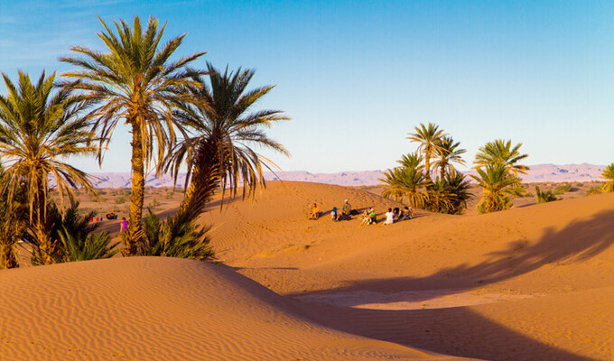
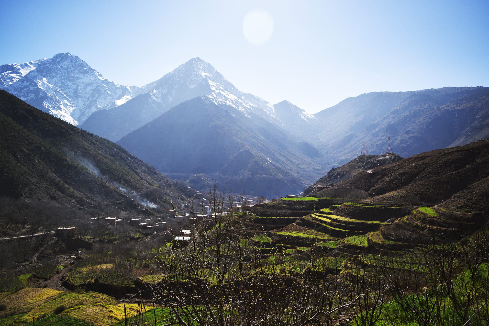
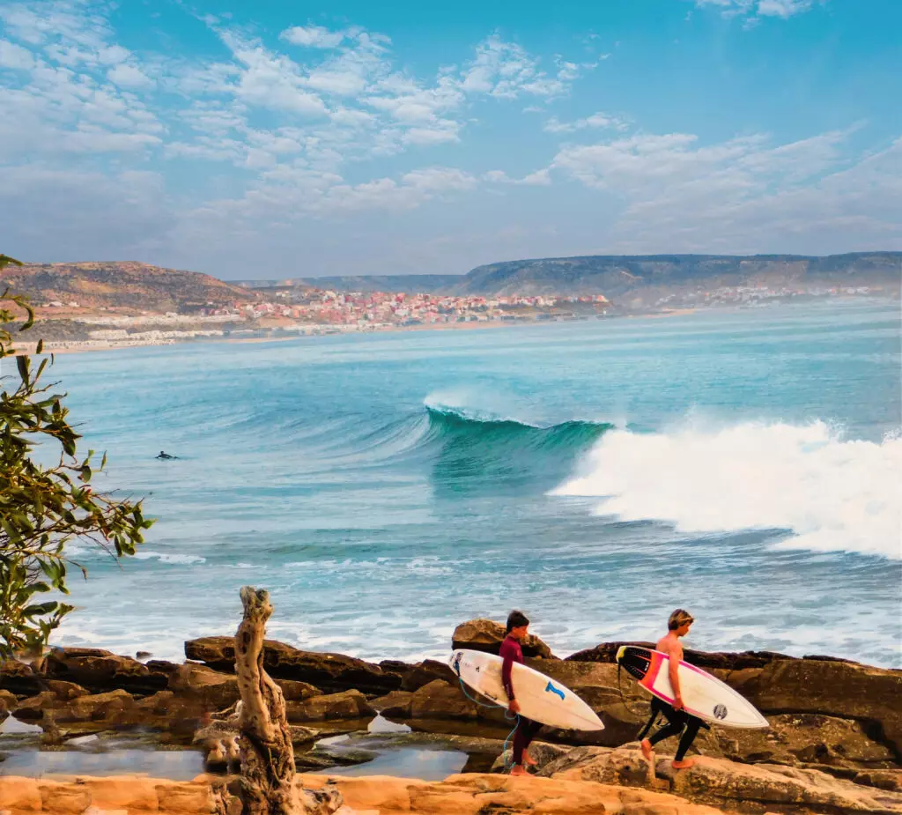
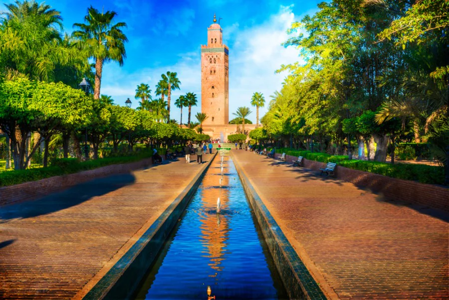
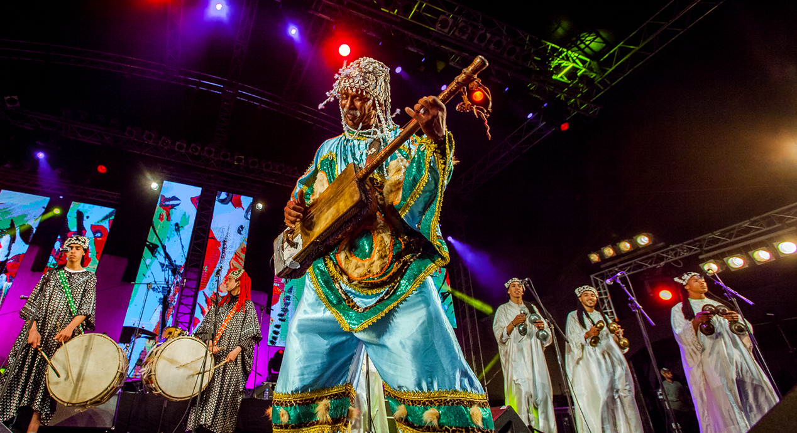
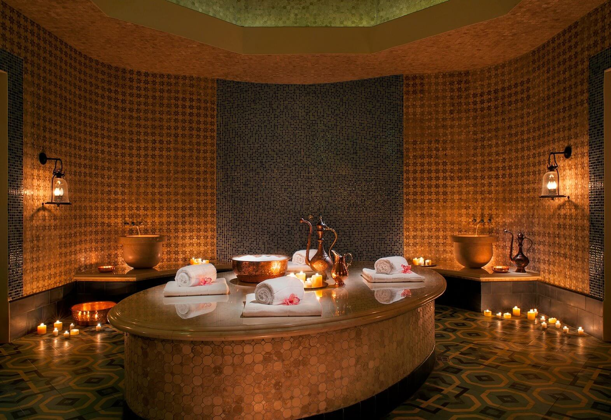

Visiter les médinas historiques
Plongez dans le labyrinthe des ruelles de Marrakech, Fès, Rabat ou Essaouira, et découvrez l'âme authentique du pays.
Voir plus
Excursion dans le désert
Partez en 4x4 ou à dos de dromadaire vers Merzouga ou Zagora pour une nuit magique en bivouac sous les étoiles.
Voir plus
Randonnée dans l'Atlas
Gravissez les sommets enneigés du Haut Atlas, explorez les cascades d'Ouzoud et visitez les petits villages berbères.
Voir plus
Surf et sports nautiques
Affrontez les vagues de l'océan Atlantique à Agadir, Taghazout, Essaouira ou Dakhla, véritables paradis pour surfeurs.
Voir plus
Découvrir l'artisanat local
Observez les artisans à l'œuvre : tissage de tapis, poterie colorée, travail du cuir et réalisation de mosaïques zellige.
Voir plus
Cours de cuisine marocaine
Apprenez à préparer un authentique tajine, un couscous traditionnel ou le rituel du thé à la menthe lors d'un atelier culinaire.
Voir plus
Monuments historiques
Visitez les magnifiques kasbahs, les anciens palais grandioses, les mosquées ornées et les anciens remparts défensifs.
Voir plus
Participer aux festivals
Vibrez au son du festival de musique Gnaoua à Essaouira, du festival Mawazine à Rabat, ou des moussems traditionnels locaux.
Voir plus
Hammam et bien-être
Profitez d'un véritable moment de relaxation avec un gommage au savon noir dans un hammam traditionnel ou un spa luxueux.
Voir plus
Photographie & Paysages
Capturez la beauté des murs bleus de Chefchaouen, les ombres des dunes du désert ou l'effervescence des souks.
Voir plus